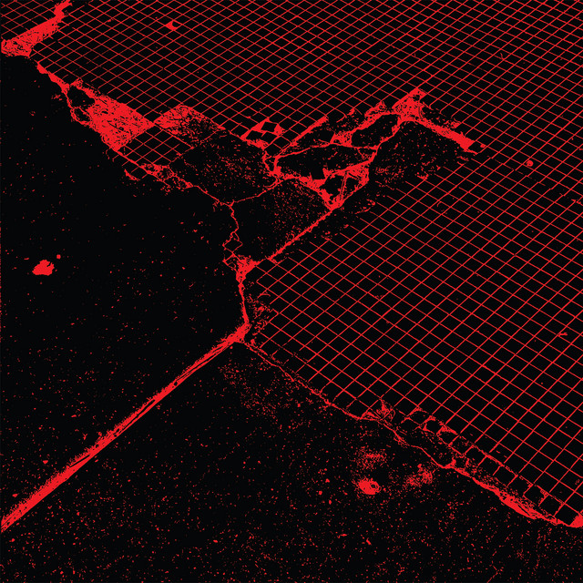

FACS - Still Life in Decay



Información del álbum facilitada por discogs.com:
Fecha de lanzamiento: 2023
Géneros: Rock
Estilos: Krautrock, Post-Punk, Noise
Pais: Japan
Votos: Media de 4.55 con 11 votos
Sello: Bronze
Phonographic Copyright (p): Bronze Records Ltd.
Copyright (c): Bronze Records Ltd.
Licensed From: Castle Copyrights Ltd.
Bass Guitar - Gary Thain
Design [Designed And Drawn By] - Roger Dean (4)
Drums, Percussion - Lee Kerslake
Engineer - Peter Gallen
Engineer [Assistant Engineer] - Ashley Howe
Guitar - Mick Box
Keyboards, Guitar, Percussion - Ken Hensley
Photography By - Dominy Hamilton
Photography By - Roger Dean (4)
Producer - Gerry Bron
Vocals - David Byron
Voice [All Other Voices] - Uriah Heep
Tracklist:
A1. Constellation
A2. When You Say
A3. Slogan
A4. Class Spectre
B1. Still Life
B2. New Flag